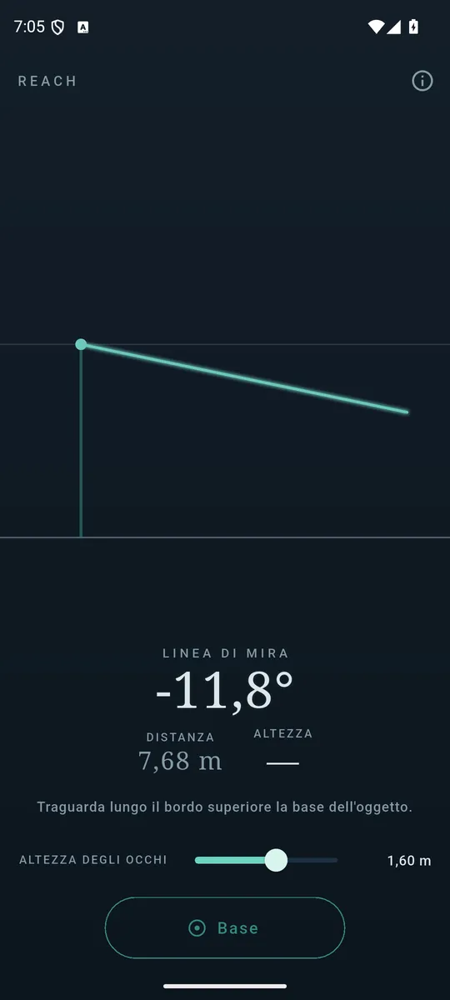
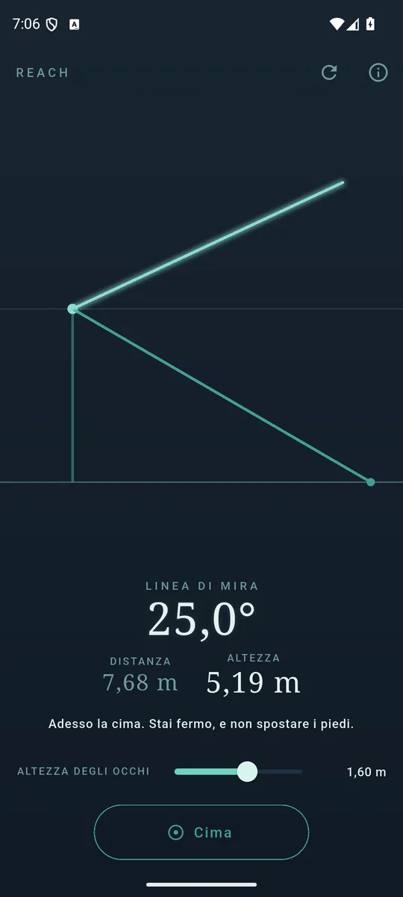
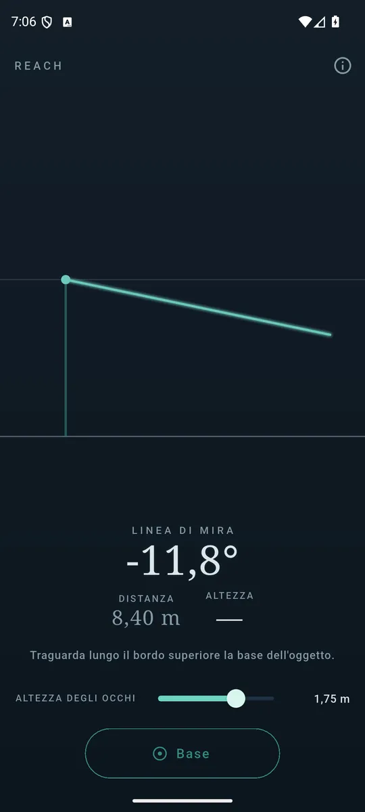

ItalianoEnglish
How tall is that tree? Will the wardrobe fit under that ceiling? How far away is that wall? Hold the phone upright and sight along its top edge: first the bottom, one tap; then the top, another tap. Distance and height appear together.

The bottom first: you sight along the edge of the phone. 
Then the top, and distance and height appear together. 
The one number the phone cannot sense.
How it works
Two angles and one known length, which is how high your eyes are. The angle down to the bottom, with your eye height, gives the distance; the angle up to the top, with that distance, gives the rest. It is a surveyor's trigonometry with an accelerometer instead of a theodolite.
The drawing on screen is not an illustration: it is the measurement. The sight line swings with the phone, the base leg appears when you take it, and the thing grows out of the ground the moment there is a height to draw.
The three things that change the answer, and the app says all three
- Your eye height. It is the one number the phone cannot sense, and fifteen centimetres of difference is metres of error on a tall building. The slider is on the main screen, not inside a menu.
- Level ground between you and it: on a slope the distance is wrong, and everything after it with it.
- A steady hand. Below a certain steadiness the app will not let you take the reading, rather than hand you a number that looks fine.
When it refuses to answer
Aim too near the horizontal and the app will not take the reading. There the tangent runs away: a tremble is worth tens of metres, and such a number would be a lie told precisely — the worst kind, because every digit is in the right place.
Your data stays yours
Reach asks for no permissions at all, not even the camera: you sight along the edge of the phone, you do not look through the screen — and that is a decision, not a gap. No account, no server of ours, and the network is needed only for the ads.
How it is paid for
One banner anchored at the bottom, and that is all: no subscription, no measurement held hostage.
Where to find it
Not on Google Play yet. The link will appear here when it is.